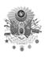

TAHTTAN İNDİRİLEN OSMANLI PADİŞAHLARI
1- I. Bayezid (1360-1403): Dördüncü Osmanlı Padişahı’dır. Babası Sultan I. Murad, annesi Gülçiçek Hatun’dur. 1402 yılında, Ankara Savaşı’nda Timur’a, oğlu Mustafa ile tutsak düşmüş, tahtından da indirilmiştir böylece.
2- II. Murad (1404-1451): Altıncı Osmanlı Padişahı’dır. Babası I. Mehmed, annesi Emine Hatun’dur. 1444 yılında, oğlu II. Mehmed lehine tahttan feragat eder. Ancak, 1446 yılında, Yeniçeri isyanı neticesinde taht’a geri dönmek zorunda kalır ve 1451 yılında eceliyle ölene kadar da inmez.
3- II. Mehmed (1432-1481): Yedinci Osmanlı Padişahı’dır. Babası II. Murad, annesi Hüma Hatun’dur. 1446 yılında, Babası II. Murad’a, tekrar padişah olmasını rica ettikten sonra, tahtı teslim etmiştir. 1451 yılında babası ölünce, ikinci kez taht’a geçer ve 1481 yılında eceliyle ölene kadar kalır.
4- II. Bayezid (1447-1512): Sekizinci Osmanlı Padişahı’dır. Babası II. Mehmed, annesi Gülbahar Hatun’dur. Oğlu I. Selim lehine tahttan feragat etmiştir. 1512 yılında, Dimetoka yakınlarında ölmüştür. Zehirlenerek öldürülmüş olduğu da söylenir.
5- I. Mustafa (1591-1639): On Beşinci Osmanlı Padişahı’dır. Babası III. Mehmed, annesi Fuldane Valide Sultan’dır. 1617 yılında geçtiği tahttan, 1618 yılında, zekâ geriliğinden ötürü, genç yeğeni II. Osman lehine, Kapıkulu tarafından indirilmiştir. 1622’de bir kez daha taht’a çıkarılmış ve aynı gerekçeyle bir yıl sonra tekrar indirilmiştir.
6- II. Osman (1604-1622): On Altıncı Osmanlı Padişahı’dır. Babası I. Ahmed, annesi Hatice Valide Sultan’dır. 1622 Yeniçeri isyanında tahttan indirilmiş ve Sadrazam Kara Davud Paşa tarafından zindanda öldürülmüştür. Orduyu yeniden düzenlemek istediği için başına gelmiştir bütün bunlar.
7- I. İbrahim (1615-1648): On Sekizinci Osmanlı Padişahı’dır. Babası I. Ahmed, annesi Kösem Sultan’dır. Şeyhülislam liderliğinde gerçekleştirilen darbe ile tahttan indirilmiştir. 1648’de, İstanbul’da isyancıların önderi olan, Sadrazam Mevlevî Sofu Mehmed Paşa tarafından boğdurulmuştur.
8- IV. Mehmed (1642-1693): On Dokuzuncu Osmanlı Padişahı’dır. Babası I. İbrahim, annesi Turhan Hatice Valide Sultan’dır. 1648 yılında çıktığı tahttan, II. Mohaç Muharebesi’nde, Osmanlı’nın uğradığı yenilginin ardından 1687’de indirilmiştir.
9- II. Mustafa (1664-1703): Yirmi İkinci Osmanlı Padişahı’dır. Babası IV. Mehmed, annesi Rabia Gül-Nuş Valide Sultan’dır. 1695 yılında çıktığı tahttan, “Edirne Vakası” olarak anılan Yeniçeri ayaklanması sonucu, 1703 yılında indirilmiştir.
10- III. Ahmed (1673-1736): Yirmi Üçüncü Osmanlı Padişahı’dır. Babası IV. Mehmed, annesi Rabia Gül-Nuş Valide Sultan’dır. II. Mustafa’nın öz kardeşidir. 1703 yılında çıktığı tahttan, Patrona Halil öncülüğündeki Yeniçeri isyanıyla, 1730 yılında indirilmiştir.
11- III. Selim (1761-1808): Yirmi Sekizinci Osmanlı Padişahı’dır. Babası III. Mustafa, annesi Mihrişah Valide Sultan’dır. 1789 yılında çıktığı tahttan, 1807 yılında, Kabakçı Mustafa önderliğindeki Yeniçeri isyanıyla indirilmiştir. Bir yıl sonra da İstanbul’da Padişah IV. Mustafa’nın emriyle katledilmiştir.
12- IV. Mustafa (1779-1808): Yirmi Dokuzuncu Osmanlı Padişahı’dır. Babası I. Abdülhamid, annesi Ayşe Seniyeperver Valide Sultan’dır. Alemdar Mustafa Paşa tarafından gerçekleştirilen ayaklanma neticesinde, 1807 yılında çıktığı tahttan, 28 Temmuz 1808 yılında indirilmiş ve 17 Kasım 1808’de de Padişah II. Mahmud’un emriyle idam edilmiştir.
13- I. Abdülaziz (1830-1876): Otuz İkinci Osmanlı Padişahı’dır. Babası II. Mahmud, annesi Pertevniyal Valide Sultan’dır. 1861 yılında çıktığı tahttan, 30 Mayıs 1876’da, bakanları tarafından indirilmiş, beş gün sonra da ölü bulunmuştur. Ya intihar ettiği ya da muhtemel bir suikasta kurban gittiği düşünülmektedir.
14- V. Murad (1840-1904): Otuz Üçüncü Osmanlı Padişahı’dır. Babası Abdülmecid, annesi Şevk Efza Valide Sultan’dır. 1876 yılında taht’a çıkmasından 3 ay sonra, akıl hastası olduğunun anlaşılması üzerine indirilmiştir.
15- II. Abdülhamid (1842-1918): Otuz Dördüncü Osmanlı Padişahı’dır. Babası Abdülmecid, annesi Tir-i Müjgân Üçüncü Kadınefendi’dir. 1876 yılında çıktığı tahttan, 1909’da 31 Mart Vakası sonrası, indirildi. 1912’de Selanik’in Yunanistan’a kaybedilmesiyle, 10 Şubat 1918’deki vefatına kadar, Beylerbeyi Sarayı’na kapatıldı.
16- VI. Mehmed (1861-1926): Otuz Altıncı Osmanlı Padişahı’dır. Babası Abdülmecid, annesi Gülistan Münire Dördüncü Kadınefendi’dir. 1918’de çıktığı tahttan, 1922’de Saltanat’ın kaldırılmasıyla indirildi. 1926 yılında İtalya’da sürgündeyken öldü.